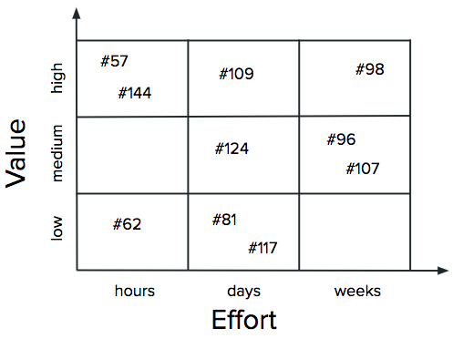

class: title-slide <div align="center" style="padding-top: 2rem;"> <p>Managing Research Software Projects</p> <h1>Project Management</h1> <p> <img src="../files/codebender.svg" alt="logo" width="20%" /> </p> </div> --- ## Project Management - The project manager manages the schedule - Who is doing what? - When do we cut it and do something smaller? --- ## Feedback Loops - It's all about timescales <div align="center"> <p> <img src="../files/timescales.svg" alt="Timescales" width="100%"/> </p> </div> --- ## Analysis & Estimation - Sticky notes on a whiteboard - Lots of discussion <div align="center"> <p>  </p> </div> --- ## Analysis & Estimation - Sticky notes on a whiteboard - Lots of discussion <div align="center"> <p> <img src="../files/prioritization-using.png" alt="Prioritization (using)"/> </p> </div> --- ## Status Updates - Three-column table in a Google Doc for each weekly meeting <table width="100%" class="smalltable"> <tr> <th>Person</th> <th>Progress</th> <th>Plans</th> <th>Discussion</th> </tr> <tr> <td>Ren</td> <td> <ul> <li>Parsing OCTL records</li> <li>Deployed progress bar patch</li> </ul> </td> <td> <ul> <li>Tag OCTL records in DVC</li> <li>Help onboard Silvia</li> </ul> </td> <td> <ul> <li>Duplicate OCTL tags?</li> </ul> </td> </tr> <tr> <td>Mikka</td> <td> <ul> <li>Refactored PostgreSQL connector</li> <li>Patched database tests</li> </ul> </td> <td> <ul> <li>#156: handle records with NULL timestamp</li> <li>#171: auto-archive duplicate records</li> </ul> </td> <td> <ul> <li>Clarify authorship guidelines</li> </ul> </td> </tr> <tr> <td>Sanjay</td> <td> <ul> <li>…</li> <li>…</li> </ul> </td> <td> <ul> <li>…</li> <li>…</li> </ul> </td> <td> <ul> <li>…</li> <li>…</li> </ul> </td> </tr> <tr> <td>Jess</td> <td> <ul> <li>…</li> <li>…</li> </ul> </td> <td> <ul> <li>…</li> <li>…</li> </ul> </td> <td> <ul> <li>…</li> <li>…</li> </ul> </td> </tr> </table> - Anyone can <strong><em>highlight</em></strong> items they want discussed --- class: sidebar ## Productivity - [<a href="../bibliography/#Prechelt2000">Prechelt2000</a>] programmers implement the same thing in the language of their choice - How long did it take? <div align="center"> <p> <img src="../files/productivity.svg" alt="Programmer productivity measures from Prechelt"/> </p> </div> --- class: sidebar ## Productivity - Shortest and longest times were 0.6 and 63 hours - Ratio is 150X (!) - But people used 7 different languages - If we only look at Java, times are 3.8 vs. 63 hours (17X) - But comparing best and worst exaggerates differences - 90th percentile vs. 50th gives 3.7X --- ## Findability - Make them the same in all repositories <div align="center"> <table class="smalltable"> <tr><th>Group</th><th>Label</th><th>Meaning</th></tr> <tr><td>Challenge</td><td>bug report</td><td>Something isn't working</td></tr> <tr><td></td><td>feature request</td><td>Something more is needed</td></tr> <tr><td></td><td>question</td><td>Can you please explain…</td></tr> <tr><td>Response</td><td>cleanup</td><td>Tidying up</td></tr> <tr><td></td><td>enhancement</td><td>Adds something new</td></tr> <tr><td></td><td>discussion</td><td>Question or proposal</td></tr> <tr><td></td><td>fix</td><td>Fixes a problem</td></tr> <tr><td>Kind</td><td>design</td><td>User interface</td></tr> <tr><td></td><td>code</td><td>In the software</td></tr> <tr><td></td><td>docs</td><td>In the documentation</td></tr> <tr><td></td><td>test</td><td>Because quality</td></tr> <tr><td></td><td>release</td><td>Packaging and publication</td></tr> <tr><td>Misc</td><td>good first issue</td><td>Good for newcomers</td></tr> <tr><td></td><td>task</td><td>An instance of a checklist</td></tr> </table> </div> --- class: exercise ## In Progress 1. What do you expect each of your colleagues to deliver this week? 1. What do *they* expect *you* to deliver? 1. What roadblocks do they face? 1. How much of this could you discover without talking to them?